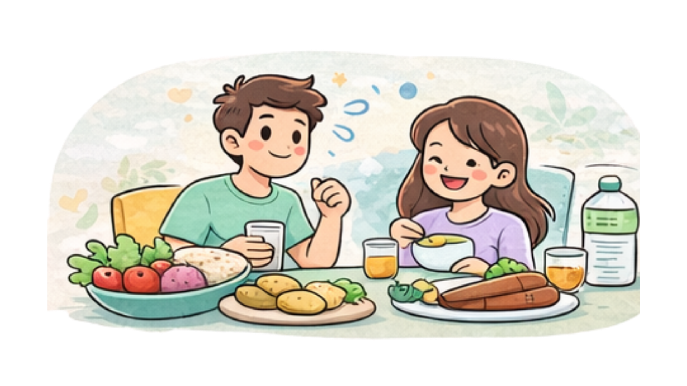

🥗 Jaga Pola Makan Adalah Kunci
Asupan makanan sehari-hari sangat memengaruhi kadar gula darah. Konsumsi minuman manis, camilan tinggi gula, dan makanan cepat saji sebaiknya diminimalkan.
Sebagai gantinya, perbanyak konsumsi sayur, buah segar, serta sumber protein. Memilih karbohidrat kompleks seperti nasi merah jauh lebih baik daripada nasi putih berlebih.
🏃♂️ Jangan Lupa Gerak!
Bantu tubuhmu membakar gula dengan aktivitas fisik ringan minimal 30 menit sehari. Jalan kaki santai pun sudah sangat membantu, lho!
